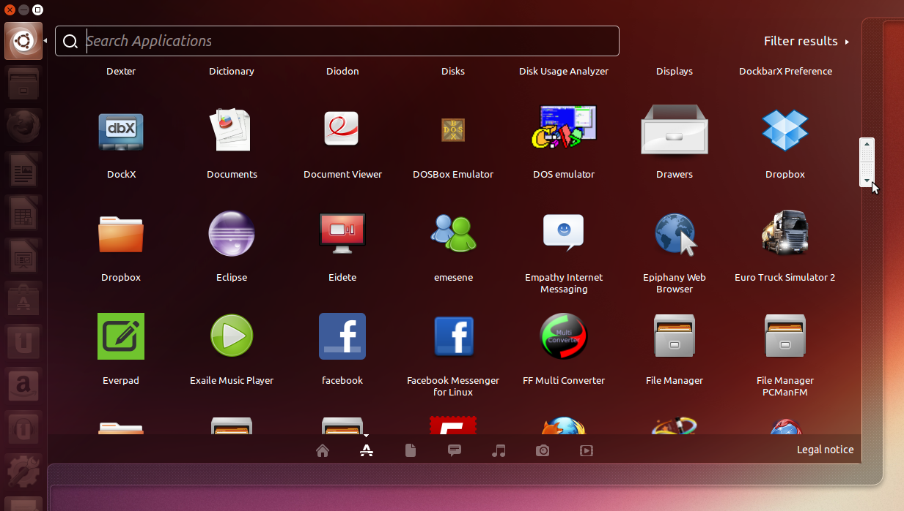
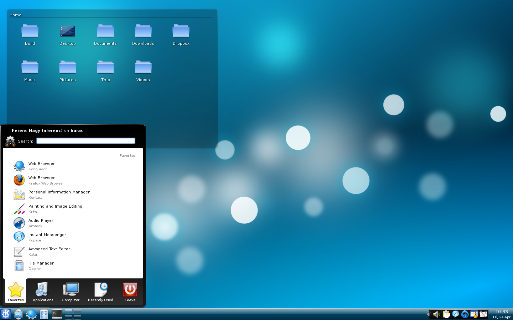
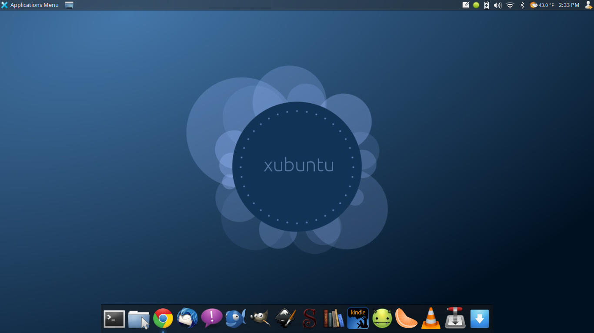
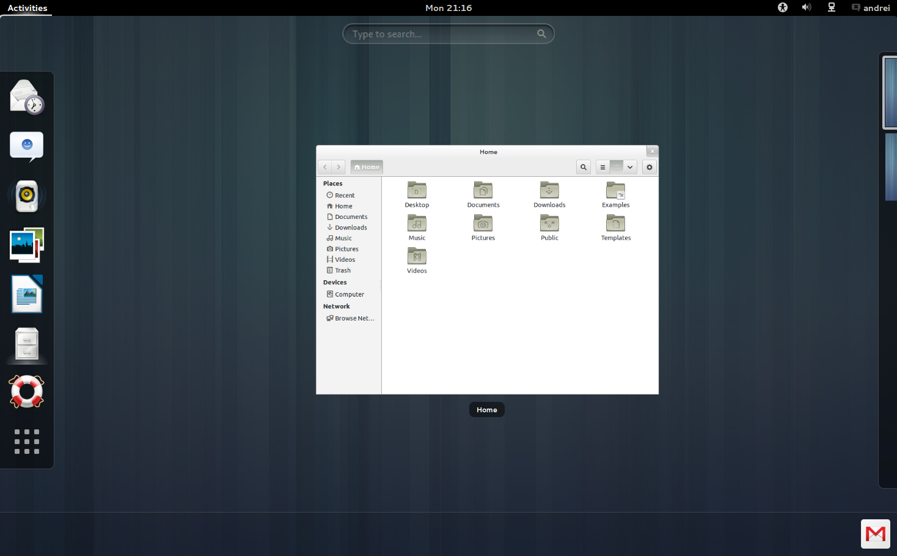
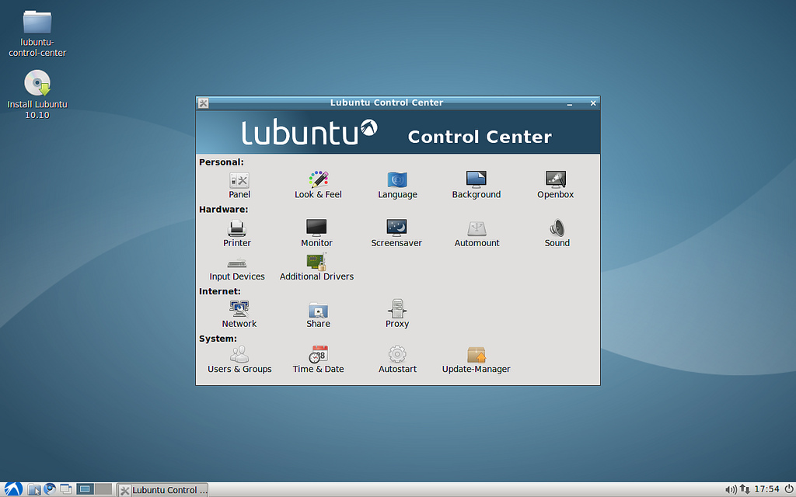

Ubuntu (Afrika: kemanusiaan) adalah sistem operasi Linux yang diciptakan dari Debian oleh Perusahaan Canonical di Inggris. Nama Ubuntu dipilih oleh direktur Canonical, Mark Shuttleworth, yang berasal dari Afrika Selatan. Ubuntu menggunakan desktop environment buatan sendiri bernama Unity yang memiliki ciri khas panel ikon di kiri dan dominasi warna ungu-oranye. Ubuntu tersedia untuk desktop, laptop, smartphone, tablet, dan server. Ubuntu tersedia gratis serta berlisensi free software dan open source. Ubuntu merupakan salah satu distro Linux favorit pengguna komputer di seluruh dunia. Situs resmi Ubuntu adalah http://ubuntu.com. Ubuntu bisa diunduh gratis dari mirror di seluruh dunia, termasuk di Indonesia misalnya http://kambing.ui.ac.id/iso/ubuntu
Versi-Versi Rilis Ubuntu
hat dari nomor versi, Ubuntu dirilis pertama kali pada
versi 4.04 (tahun 2004 bulan 4) dan saat ini mencapai
1 5.04 (tahun 201 5 bulan 4). Ubuntu punya dua macam
rilis, reguler dan LTS. Rilis reguler 9 bulan sekali (setahun
pasti ada 2 rilisan Ubuntu), rilis LTS 2 tahun sekali. Versi
Ubuntu yang LTS selalu berakhiran 04 dan didukung
selama 5 tahun. Versi Ubuntu yang reguler didukung
selama 9 bulan. Contoh Ubuntu reguler misalnya 1 2.1 0
(tahun 201 2 bulan 1 0), LTS misalnya 1 2.04 (tahun 201 2
bulan 4). Setiap kali rilis, Ubuntu selalu memiliki nama
berdasarkan kata sifat dan nama hewan yang urut berdasarkan abjad. Misalnya 1 2.04 Precise Pangolin, 1 2.1 0
Quantal Quetzal, 1 3.04 Raring Ringtail.
|  |  |
|  |  |
Versi-Versi Desktop Ubuntu
Dilihat dari desktop environment-nya, setiap kali rilis, Ubuntu pasti merilis minimal 4 versi. Ubuntu original, memakai desktop Unity, disebut Ubuntu.
Ubuntu yang memakai desktop KDE, KDE +
Ubuntu, dinamakan Kubuntu. Ubuntu + XFCE,
Xubuntu. Ubuntu + LXDE, Lubuntu. Maka sekali rilis, Ubuntu pasti mengeluarkan 4 OS Ubuntu
dengan tampilan yang berbeda-beda yakni Ubuntu,
Kubuntu, Xubuntu, dan Lubuntu. Seiring bergulirnya
waktu, saudara-saudara Ubuntu bertambah dengan
disertakannya Ubuntu GNOME dan Ubuntu MATE
pula. Tentu KDE, XFCE, LXDE, GNOME, dan
MATE semuanya adalah nama desktop environment. Tentu pula, tampilan masing-masing berbeda-beda. Semua pilihan diserahkan kepada
pengguna.
Perubahan-Perubahan Drastis Ubuntu
Pada perkembangannya, Ubuntu mengalami perubahanperubahan drastis juga selayaknya Microsoft Windows. Misalnya,
penamaan. Ubuntu perdana kita adalah 4.1 0 dengan nama
Warthy Warthog, 5.04 Hoary Hedgehog, dan 5.1 0 Breezy
Badger. Tiga-tiganya tidak urut secara abjad. Namun, dimulai
sejak 6.04 Dapper Drake (2006), 6.1 0 Edgy Eft, hingga kini
1 5.04 Vivid Vervet (201 5), semua rilis Ubuntu selalu urut
berdasarkan abjad.
Perubahan yang termasuk sejarah di kalangan free
software/open source terjadi tahun 201 1 ketika Ubuntu tidak lagi
membawa OpenOffice.org menggantinya dengan LibreOffice.
Ya, program office bawaan di Ubuntu sejak 2004 sampai 201 1 (7
tahun) adalah OpenOffice.org. Namun karena kejadian besar di
balik OpenOffice.org kala itu, kejadian bersejarah itu, Canonical
memutuskan tidak lagi membawa OpenOffice.org dalam Ubuntu.
Yang dibawa hingga saat ini adalah LibreOffice. Catatan:
walaupun OpenOffice.org tidak disertakan secara bawaan, ia
bisa diinstal sendiri setelah Ubuntu selesai diinstal.
Perubahan yang paling drastis terjadi
sekitar 201 1 ketika Ubuntu desktop
meninggalkan desktop environment
GNOME dan beralih memakai Unity.
Perubahan user interface ini disambut
sinis oleh banyak pengguna. Bisa
ditebak, karena mereka tidak terbiasa.
Tampilan Unity (1 1 .04 - 1 5.04 atau
201 1 -- 201 5) sangat berbeda dengan
GNOME (4.1 0 -- 1 0.1 0 atau 2004 -
201 0). Kala itu, pengguna banyak
yang menolak Ubuntu sekaligus
menolak Unity, pindah ke OS Linux
lain seperti Linux Mint atau Debian.
Namun sekarang, pengguna bisa
dianggap telah menerima tampilan
Unity ini. Sudah banyak pengguna
yang akhirnya suka dengan Unity.
Catatan: walaupun Ubuntu
menggunakan Unity, tampilan
GNOME tetap bisa diinstal sendiri setelah Ubuntu diinstal.
Sekian perkenalan dasar dengan Ubuntu.